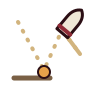
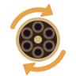
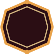

BARUTÇU
SEVİYE 4


Seken Mermi
YÜKSELTSv. 4 → 5
Kurşun 2 kez daha seker. Hasar +%10.

Hızlı Doldurma
YENİSv. 1
Doldurma süresi %20 kısalır.

Zincirleme Patlama
EVRİMYeni form
Seken Mermi + Barut Kesesi: her kurşun seker ve patlar.
Bir karta dokun